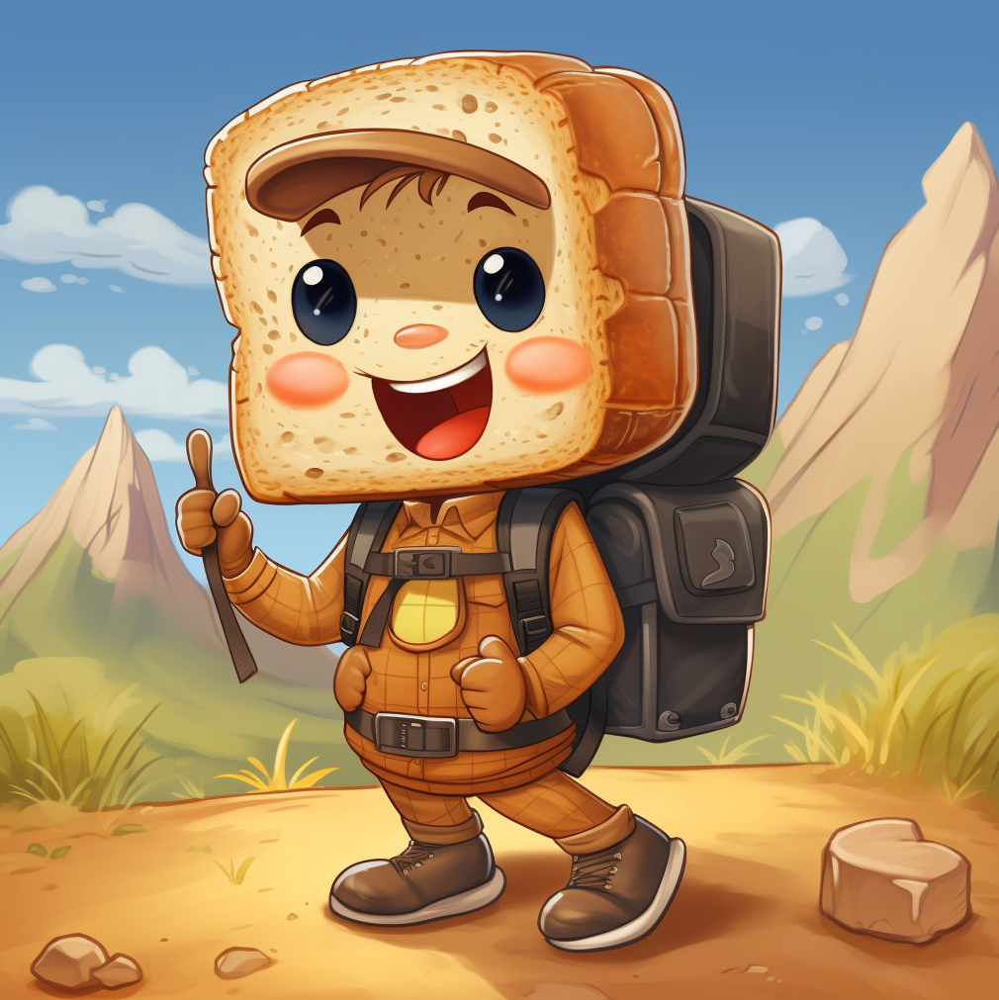
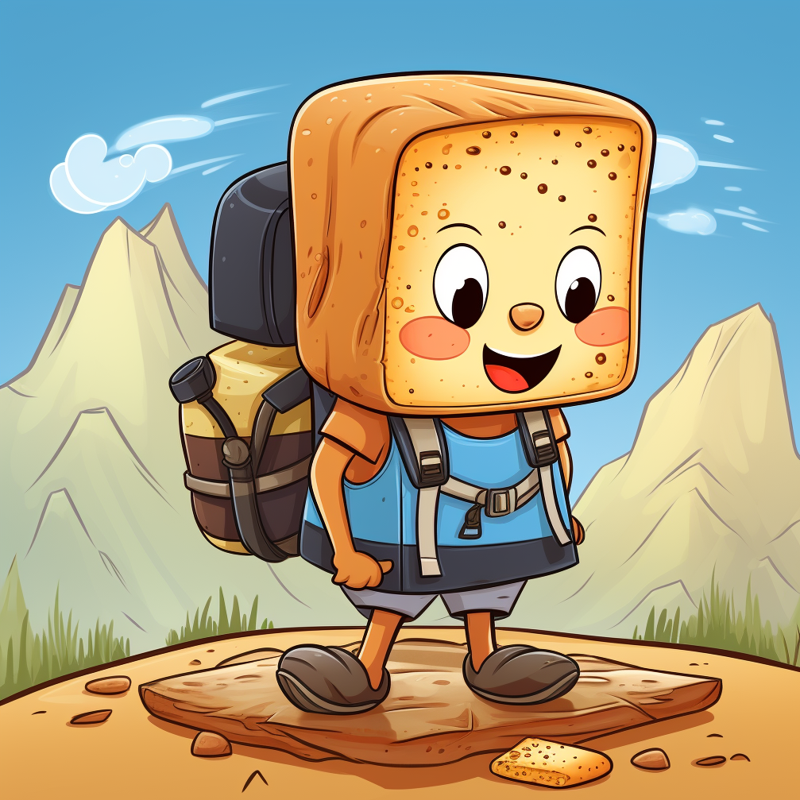
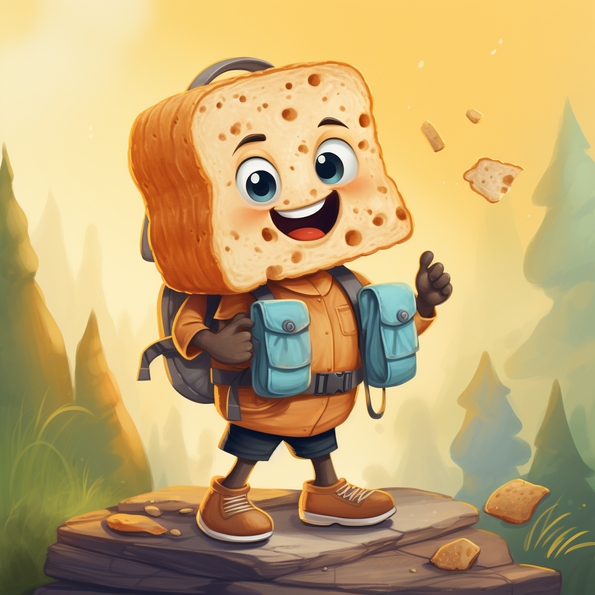

Mariia Borisenko
Web-Designer and Developer
Traversing from the role of a contact center supervisor in Russia, I embraced my passion for the arts and turned it into a vibrant career in the US. My journey includes experiences in teaching art and photography, managing child nutrition services, and culminating as a successful epoxy resin artist. Having completed a degree in Fine Arts, I'm currently honing my web design skills to blend my artistic talents with the digital world, aspiring to create holistic design experiences.
My unique blend of creativity, management, and customer service expertise equips me with a deep understanding of user needs and the ability to translate them into engaging design solutions. Having handled diverse roles, including resin artist and photographer, I possess a keen eye for aesthetics, an understanding of composition, and an ability to create compelling visual narratives - critical skills in web design. My expertise in various Adobe Creative Suite tools, UI, and content creation, further positions me to excel in the web design industry.
Featured Projects
View selected projects below. More information can be found at christinatruong.com.
Health Insurance Coverage Icon
This project is a 2D vector illustration dedicated to the theme of health insurance. Using a combination of purple and yellow shades, the icon design aims to capture attention and convey the importance of accessible and comprehensible health insurance for all. The icon can be utilized in various marketing and informational materials such as brochures, websites, mobile apps, and presentations to facilitate communication and education in the healthcare sector.
View project / case studyTraveler Toast
  The goal of this project was to create a symbol of exploration and adventure in a unique and playful execution. This design can be used in children's books, educational materials, merchandise, or as a logo for thematic events and festivals.
View project / case studyWork Experience
As a multilingual artist and web designer in training, I carry an international perspective that informs my design philosophy. My experiences managing my own art business have honed my resilience, entrepreneurial spirit, and ability to manage multifaceted projects. By incorporating my creativity into my technical skills, I offer a unique blend of artistic intuition and web design knowledge. You'll find in me a dedicated, highly creative individual who seeks to combine art and technology to create impactful digital experiences
Epoxy Resin Artist
Maria Risen Art
Feb 2018 - Present
I've been creating and selling my resin art for over five years. My duties include not just creating art but also running the business side of things like planning, strategy, finance and accounting, marketing and sales, and customer service. I have learned to manage all these roles effectively, growing my business both offline and online.
Skills I learned:
- Creativity Skills
- Business Management
- Sales & Marketing
- Business Planning
- Customer Service
Freelance Photographer
Maria Risen Photo
May 2016 - Present
As a freelance photographer, I work with families and individuals to capture their special moments. Also, I have experience in product photography. My work included editing the photographs in various software including Photoshop, Lightroom, Capture One, and VSCO.
Skills I learned:
- Photography Skills
- Image Editing
- Communication and interaction
- Adobe Photoshop
- Lightroom
Assistant Manager of Child Nutrition Services
Wake County Public School System
Feb 2019 - Mar 2020
I started working as a cook at Davis Drive Elementary, but within a couple of months, I was promoted to Assistant Manager of Child Nutrition Services. During my tenure from February 2019 to March 2020, I ensured food quality standards, received and inspected deliveries, processed payments, and managed daily kitchen operations. I coordinated resources between locations, performed opening and closing procedures, and acted as the manager in their absence.
Skills I learned:
- Multitasking
- Team Coordination
- Team Management
- Financial Management
Education
Wake Technical Community College
Associate's degree, web design, 2020 - 2022
Skills: Adobe XD, Figma, JavaScript,HTML5,PHP, Social Media Management, Adobe Creative Suite, Adobe Photoshop, Premiere PRO